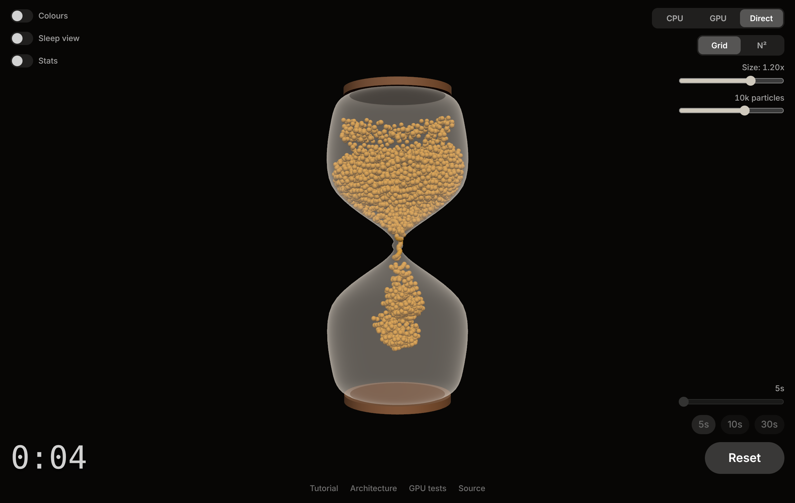
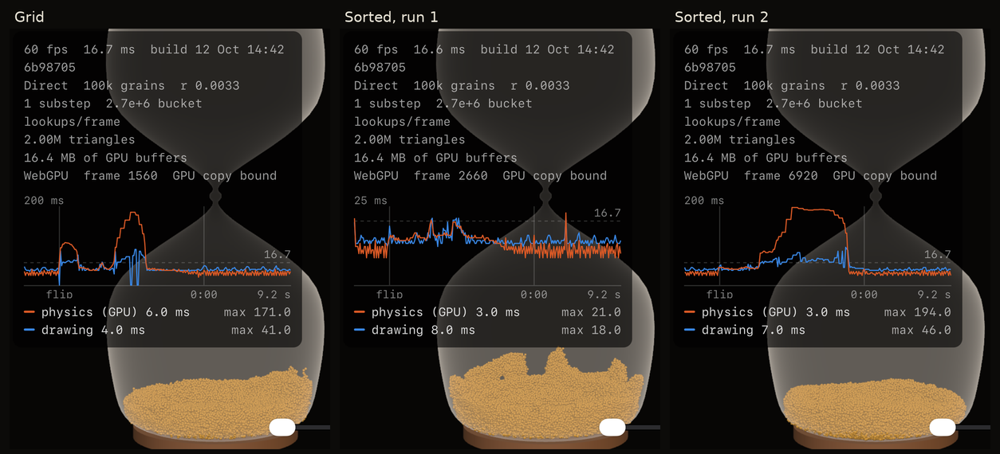

How an iOS Metal particle simulation became a WebGPU page, and how each piece works

The iOS app's CLAUDE.md and its 408-line Metal file described everything needed. Four choices would shape the whole project, so they were asked first:
ParticlePhysics.metal.There are two browser APIs. WebGL 2 is OpenGL ES 3.0: it can draw triangles but has no compute shaders. WebGPU is the newer one, designed as a common layer over Metal, Direct3D 12 and Vulkan. If you know Metal, WebGPU will feel familiar.
| Metal | WebGPU |
|---|---|
MTLCreateSystemDefaultDevice() | await navigator.gpu.requestAdapter() then await adapter.requestDevice() |
MTLCommandQueue | device.queue |
MTLBuffer | GPUBuffer, with its uses declared when it is created |
MTLComputePipelineState | GPUComputePipeline |
encoder.setBuffer(_, index:) | A GPUBindGroup: all the bindings for a shader, made once |
commandBuffer.commit() | device.queue.submit([encoder.finish()]) |
waitUntilCompleted() | Nothing. See below. |
buffer.contents() | await buffer.mapAsync(), and only for buffers made for it |
Two differences matter more than the rest.
Nothing blocks. The page's JavaScript runs in a sandboxed process; the real GPU driver lives in another. Every call you make is recorded and sent across. So there is no way to wait for the GPU, and no pointer into GPU memory. The app's engine called waitUntilCompleted() after each substep and then read bufferA.contents() directly. Neither exists here.
Shared memory is gone. On an iPhone a storageModeShared buffer is the same memory for CPU and GPU. On the web, getting data back to JavaScript always means a copy and a wait, even on that same iPhone. Section 8 is about what that costs.
three.js sits on top of either API. It gives you a scene graph, cameras, lights and materials, and turns them into draw calls. It doesn't hide the device, which is what makes the rest of this project possible:
const adapter = await navigator.gpu.requestAdapter();
const device = await adapter.requestDevice();
// three.js draws with our device...
const renderer = new THREE.WebGPURenderer({ canvas, device });
// ...and so does the physics engine. One device, shared buffers.
const engine = await GpuPhysics.create(device);Everything that isn't pixels or GPU calls went into js/models and js/physics/cpuSimulation.js, with no DOM and no three.js, so Node's built-in test runner can run it:
hourglassProfile.js: the glass. Eleven control points, smoothed with Catmull-Rom splines into 67 profile points. Spin that curve around the Y axis and you have the mesh (a "surface of revolution"). The same curve gives the wall collision.packing.js: the grain radius for a given count, and the hex-packed starting pile.cpuSimulation.js: the app's CPU physics, line for line.One decision here pays off three times later. A particle is stored as eight floats in a single Float32Array:
[ x, y, z, radius, vx, vy, vz, sleep ] // 32 bytesThat is also the layout of the app's GPUParticle struct, and it is a legal vertex buffer layout. So the CPU simulation, the compute shader and the vertex shader can all use the same bytes.
The scene is small: a group holding the glass, two wooden caps and the sand; a camera; six lights. The group rotates for the flip. The camera and lights sit outside it, so they don't.
three.js meshes are typed arrays with names. The model produces positions, normals and indices; the scene wraps them:
const surface = createRevolutionSurface(profile.outer.slice(1, -1), 96);
const geometry = new THREE.BufferGeometry();
geometry.setAttribute('position', new THREE.BufferAttribute(surface.positions, 3));
geometry.setAttribute('normal', new THREE.BufferAttribute(surface.normals, 3));
geometry.setIndex(new THREE.BufferAttribute(surface.indices, 1));Glass is nearly invisible when you look straight through it and brighter where it curves away from you. That is the Fresnel effect, and it needs a per-pixel calculation. three.js's node materials let you write it as an expression in JavaScript:
const facing = normalView.dot(positionViewDirection).abs(); // 1 face-on, 0 edge-on
const fresnel = float(1).sub(facing).pow(3);
material.opacityNode = mix(float(0.06), float(0.26), fresnel);This is TSL, the three.js Shading Language. Those calls build a small graph, and three.js compiles the graph to WGSL for WebGPU or GLSL for WebGL. You get a custom shader that works on both.
Two settings carried over from the app: the glass doesn't write depth (or it would hide the sand behind it), and it is unlit. The app's notes say lit, reflective glass always came out too bright, and the first web attempt with a Phong material confirmed it: milky blotches. A faint even veil with brighter edges reads better.
The app drew its sand two ways. GPU mode made one SceneKit node per particle and updated each node's position every frame. Metal mode ran a second compute kernel, expandMeshes, that wrote 42 vertices per particle into a 50 MB buffer, because SceneKit offered no way to do custom instanced drawing.
WebGPU and three.js have the feature that kernel was working around. Instancing tells the GPU: draw this mesh N times, and for each copy give the vertex shader the next row of this other buffer.
// The per-instance buffer IS the particle array.
const instances = new THREE.InstancedInterleavedBuffer(data, 8); // 8 floats each
geometry.setAttribute('instancePosRadius', new THREE.InterleavedBufferAttribute(instances, 4, 0));
geometry.setAttribute('instanceVelSleep', new THREE.InterleavedBufferAttribute(instances, 4, 4));
geometry.instanceCount = count;
// In the material: scale a unit sphere and move it into place.
const p = attribute('instancePosRadius', 'vec4');
material.positionNode = positionLocal.mul(p.w).add(p.xyz);That one line of TSL is the whole of mesh expansion. The sphere mesh is stored once (80 triangles), and the vertex shader places it for each particle. There is no expanded vertex buffer and no second kernel.
Three smaller points:
frustumCulled = false.Because the velocity and sleep counter ride along in the same buffer, the material can use them. The Sleep view toggle tints sleeping grains blue with one more mix(). Turn it on in GPU or Direct mode and watch the pile fall asleep from the bottom up.
A compute shader is a function the GPU runs many times at once. Each run gets a different id. Here, run number i updates particle i. The language is WGSL, and the translation from Metal is mostly mechanical:
// Metal
kernel void physicsStep(
device const GPUParticle* readParticles [[buffer(0)]],
device GPUParticle* writeParticles [[buffer(1)]],
device const PhysicsUniforms& uniforms [[buffer(3)]],
uint tid [[thread_position_in_grid]]) { ... }
// WGSL
@group(0) @binding(0) var<uniform> u: Uniforms;
@group(0) @binding(1) var<storage, read> particlesIn: array<Particle>;
@group(0) @binding(2) var<storage, read_write> particlesOut: array<Particle>;
@compute @workgroup_size(64)
fn physicsStep(@builtin(global_invocation_id) gid: vec3u) {
let tid = gid.x;
if (tid >= u.particleCount) { return; }
...
}Running it takes five steps, all in js/physics/gpuPhysics.js, which uses no three.js so you can see each one.
device.createShaderModule({ code }) takes the WGSL as a string. That is why the shaders live in a JavaScript file.device.createComputePipelineAsync picks an entry point in the module.STORAGE | COPY_SRC | COPY_DST: shaders read and write them, they can be copied from, and JavaScript can upload into them.@binding numbers.All threads run at once, so they can't read particles that other threads are writing. There are two particle buffers. Each substep reads A and writes B, then they swap. A thread writes only its own particle, so no two threads touch the same memory and there is nothing to lock. This is exactly what the app does; in WebGPU it becomes two bind groups, A→B and B→A.
The app committed a command buffer and blocked after every substep. Here all the substeps of a frame are recorded into one command buffer and submitted once:
const encoder = device.createCommandEncoder();
for (let s = 0; s < substeps; s++) {
const pass = encoder.beginComputePass();
pass.setPipeline(pipeline);
pass.setBindGroup(0, bindGroups[this.current]); // A->B or B->A
pass.dispatchWorkgroups(Math.ceil(count / 64));
pass.end();
this.current = 1 - this.current;
}
device.queue.submit([encoder.finish()]);JavaScript then carries on. The GPU works through the queue in order, so when three.js submits its draw a moment later, the draw is guaranteed to see the finished physics.
The CPU version finds the glass radius at a height by searching the 67-point profile. Doing that once per particle per substep on the GPU would be wasteful, so (as in the app) the profile is sampled into 256 floats and the kernel interpolates between two of them. The glass is symmetric around its axis, which makes wall collision a 2D test: compare the particle's distance from the axis with the table value at its height.
The CPU loop resolves one collision at a time. When it fixes the overlap between grains 0 and 1, grain 1 has already moved by the time it is tested against grain 2. A push at the bottom of a pile travels all the way up in one pass. This ordering is called Gauss-Seidel, and it converges quickly.
On the GPU every thread reads the same snapshot. Nobody sees anybody else's correction until the next substep. That is Jacobi iteration, and it has two failure modes in a pile of sand:
The app's author found the answers over many iterations, and the WGSL keeps them unchanged:
The lesson generalises: moving an algorithm to the GPU can change its numerical behaviour, not just its speed.
The three modes exist to show one cost. They all draw the same instanced mesh. They differ in how the instance buffer is filled.
| Mode | Path of a particle each frame |
|---|---|
| CPU | JavaScript computes it → uploaded to the GPU → drawn |
| GPU | GPU computes it → copied back to JavaScript → uploaded to the GPU again → drawn |
| Direct | GPU computes it → copied on the GPU into the vertex buffer → drawn |
JavaScript can only read a buffer created with MAP_READ, and such a buffer can't be used by shaders. So reading always goes through a staging buffer:
encoder.copyBufferToBuffer(particles, 0, staging, 0, bytes); // GPU-side copy
device.queue.submit([encoder.finish()]);
await staging.mapAsync(GPUMapMode.READ); // resolves a frame or so later
target.set(new Float32Array(staging.getMappedRange())); // copy into JavaScript
staging.unmap();The promise resolves when the GPU has caught up, which is at least a frame later. So in GPU mode the picture always lags the physics slightly. If the previous read hasn't come back, the engine skips this one; it never builds a backlog.
three.js creates a GPU buffer for the instance data the first time it draws the mesh. Its backend will tell you which one:
const vertexBuffer = renderer.backend.get(instances).buffer;The particle layout is the vertex layout, so the engine appends one line to the frame's command buffer:
encoder.copyBufferToBuffer(engine.currentBuffer, 0, vertexBuffer, 0, count * 32);That is the whole of Direct mode. A memcpy inside the GPU, and JavaScript's per-frame work no longer depends on the particle count at all.
DynamicDrawUsage, which sounds right for data that changes every frame. Direct mode then drew the starting pile forever, perfectly still, while a readback showed the physics running correctly underneath. three.js re-uploads a dynamic attribute from its JavaScript array on every draw, and that upload landed after the GPU copy and overwrote it. With the default usage, three.js uploads only when asked.
The app's kernel has every particle loop over every other particle. At 50,000 grains that is 2.5 billion distance tests per substep. The GPU makes it possible, but the cost still grows with the square of the count.
A sphere can only touch things within one diameter of itself. So divide space into cubes a little wider than a diameter, record which particles are in which cube, and each particle only needs to look in its own cube and the 26 around it. The work per particle becomes constant.
A plain 3D array of cubes over the whole hourglass would be mostly empty air. It needs over a million cells for 200,000 grains, and about ten million at the smallest grain size, which no longer fits in one buffer under WebGPU's default limits. So the cube's integer coordinates are hashed into a table sized from the particle count instead:
fn hashCell(c: vec3i) -> u32 {
let h = (u32(c.x) * 73856093u) ^ (u32(c.y) * 19349663u) ^ (u32(c.z) * 83492791u);
return h & u.tableMask; // table size is a power of two
}The table has two to four buckets per particle. Each bucket is a linked list: one "head" per bucket and one "next" link per particle. For 200,000 grains that is about 3 MB.
One thread per particle adds itself to its bucket. Many threads may pick the same bucket at the same moment, so the bucket's head has to be atomic:
@group(0) @binding(2) var<storage, read_write> bucketHeads: array<atomic<u32>>;
@group(0) @binding(3) var<storage, read_write> nextInBucket: array<u32>;
let bucket = hashCell(cellOf(particlesIn[tid].posRadius.xyz));
// Swap my index in; whoever was there before becomes my "next".
nextInBucket[tid] = atomicExchange(&bucketHeads[bucket], tid + 1u);This is the lock-free stack push you would write with std::atomic::exchange. It can't lose a particle however many threads collide. Indices are stored plus one, so zero means "end of list" and clearing the heads empties every bucket.
For each of the 27 cubes: hash it, then walk that bucket's list. Two details:
The kernel's three neighbour loops (collision, light-sleep wake, deep-sleep support) are generated from one JavaScript template, forEachNeighbour(broadphase, centre, body). It emits the all-pairs loop, or the 27-cube loop with one of two ways of reading a bucket (section 10), around the same body. Everything else in the kernel is shared, and every variant uses the same substep table. So the Grid / Sorted / N² switch changes how neighbours are found and nothing else, and you can flip it mid-run with the Stats readout open.
The linked lists work, and on an iPhone they hold 20,000 grains at a 15 ms worst step. At 100,000 the phone struggles: 40 to 60 ms a step while the whole pile tumbles in the flip, and a 169 ms peak in the pour. Look at what one neighbour lookup does with a list:
var link = bucketHeads[bucket];
while (link != 0u) {
let j = link - 1u;
link = nextInBucket[j]; // can't start until the last load finished
let other = particlesIn[j]; // anywhere in a 6 MB buffer
...
}Every step of the walk waits for the one before it: a pointer chase, the GPU version of iterating a std::list. And the grains in one bucket were added in whatever order their threads ran, so they are scattered through memory. A GPU hides memory latency by switching to other threads while it waits. It can't hide a chain of dependent loads into memory it has no reason to have cached.
The standard answer is to sort. Same cubes, same hash, same table, but every substep copy the grains into one array in bucket order. Then a bucket is a range, [start, start + count), and its grains sit side by side.
A general sort is expensive. This one isn't, because the keys are small integers (bucket numbers) and we only need grains with the same key together. That is a counting sort, and every step of it runs in parallel:
rank = atomicAdd(&bucketCounts[bucket], 1u). The value that comes back is the count before its +1, so it doubles as the grain's position within its bucket: 0, 1, 2 and so on, in whatever order the threads arrive.std::exclusive_scan.start[bucket] + rank. The ranks make every slot unique, so there are no atomics in this step.The scan is the interesting part, because a running total looks inherently serial. The trick (Hillis and Steele) works in rounds within one workgroup. In round k every thread adds the value 2k places to its left, so after log₂(n) rounds each holds the total of everything up to itself:
var<workgroup> tile: array<u32, 256>; // shared by the workgroup's 256 threads
tile[lane] = value;
workgroupBarrier();
for (var offset = 1u; offset < 256u; offset *= 2u) {
var add = 0u;
if (lane >= offset) { add = tile[lane - offset]; }
workgroupBarrier(); // everyone reads before anyone writes
tile[lane] += add;
workgroupBarrier();
}var<workgroup> is Metal's threadgroup memory: fast, on-chip, shared by one workgroup only. A workgroup can't see past its own block, so the table is scanned in two passes. The first scans each block of 1,024 buckets (256 threads, each loading four counters as one vec4u) and writes each block's total. The second, a single workgroup, scans those totals. A bucket's start is its offset within its block plus its block's start. At 200,000 grains that is 524,288 buckets in 512 blocks.
Many GPU particle systems sort the particle data itself and leave it sorted. That would break things here, because a grain's index means something: it picks the grain's colour in the vertex buffer, its turn in the deep-sleep stagger (tid % 30), its sweep order, and which grain the tests follow. So the particle buffers are never reordered. The sorted array is a copy made fresh every substep, a second array records which grain each slot came from, and results go back to the grain's own slot.
The sort is used twice. Neighbours are read from the sorted copy, side by side. And the physics threads themselves run in sorted order: thread k handles the grain in slot k. So the 64 threads in a workgroup are 64 grains from the same few cubes, reading the same few ranges, which is exactly what a GPU cache rewards.
let tid = sortedIds[gid.x]; // my grain, in sorted order; everything after uses tidA range also changes what the walk limit can do. A list can only be cut short: the first 32 grains, whichever they happen to be. A range can be sampled. When a bucket holds more than 32 grains, a grain visits 32 slots spread evenly along it from a random start, so it hears from the whole crowd, not one end of it. When the bucket fits, it visits every slot, still from a random start, so the within-cell order is scrambled like the sweep order is. (The spreading takes two integer divisions per visit, which GPUs do in software, so only crowded buckets pay for it.)
workgroupBarrier on a CPU. The first version, 256 buckets per workgroup, spent 40 ms a step in the scan at 10,000 grains. With 1,024 per workgroup it spends 10 ms. The neighbour search itself came out about even with the lists there. A software GPU says nothing about caches or latency hiding on a phone, which is the whole point of sorting. The drain curve, the settled pile (level to 0.4 radii) and the sleep counts match the list grid exactly.
Three runs at 100,000 grains on an iPhone 16 Pro, Direct mode, five-second timer, one after the other. Note the first Sorted chart's scale: 25 ms, not 200.

| Flip (every grain awake) | Pour | Settled | |
|---|---|---|---|
| Grid | 60 to 80 ms | 171 ms spike, about 1 s | about 3 ms |
| Sorted, run 1 | about 10 ms | none: 21 ms at worst all run | about 3 ms |
| Sorted, run 2 | about 10 ms | 194 ms plateau, about 2.5 s | about 3 ms |
The flip is a clear win, about five times faster. With every grain awake and moving, reading neighbours as adjacent runs of memory, with a workgroup's threads all in the same few cells, beats chasing lists. This is the effect sorting is meant to have, and it showed up exactly where expected.
The pour is not fixed, and now we know why. The neck pinch (section 12) moves every grain in the neck onto the axis, where they overlap massively. The walk limit caps a grain at 32 per bucket, 27 buckets, so up to 864 neighbours, and in a jam nearly every one of them is a real overlapping contact that gets the full collision sum. The cost is about (grains in the jam) × 864. Sorting makes each of those visits cheaper but can't make them fewer. How big the jam gets varies from run to run, because the pour is chaotic: the frame time feeds the step, and the order grains land in a bucket depends on which GPU thread gets there first. So one Sorted run had no jam at all and the next had a long one. At 150,000 to 200,000 grains the jam grows and steps take 500 ms to a second. One run of each can't say whether Sorted jams more often than Grid.
Two other things to keep an eye on. The first Sorted run left towers standing up out of the settled pile, which no test has produced (the second run settled level, the levellest of the three; Grid's leans to the right). And phone power management may play a part, though throttling would lift the whole chart, not just the pour. A handful of runs in a row would separate the two: if the flip and the tail creep up, it's the phone; if only the pour jumps about, it's the jam.
There are three layers.
models/grid.js, a plain JavaScript version of both grids. One test builds a jittered pile of 3,000 grains and checks that the hash finds every true contact with no duplicates; another that the sorted layout puts every grain in its bucket's range once and finds exactly the same candidates as the lists; another that the crowded-bucket sampling never visits a slot twice and spreads its visits evenly.gpu-tests.html runs ports of the app's GPU tests on your own GPU, once per neighbour search. One more reads the sort's buffers back at 140,000 grains and checks them: every grain once, each bucket starting where the last ended across all 512 scan blocks, every grain in its own bucket's range.The page was also driven headless, in Chromium on a software GPU, to take the screenshots here. That found two environment problems (recorded in CLAUDE.md) and one real bug (the one in section 8). It is no use for judging speed, as the next sections show.
A test asserting "the neck is the narrowest point" failed. Catmull-Rom splines overshoot where a curve turns sharply, so the glass is narrowest just beside the neck, not at it, and at high counts the inner radius there reaches zero. On top of that, the neck is sized as the grain radius plus 0.002, while the wall test subtracts a clearance of 0.003. The usable radius at the neck is therefore negative for every count.
Both engines have a branch for "narrower than the particle": move the grain onto the axis. So grains don't queue at the neck. They are placed on the axis, overlapping, and fall through together. In CPU mode the sphere collision that runs afterwards can push a few of them sideways out through the glass for a frame.
The consequence was measured in this port. At the 5 second setting, the upper chamber empties in about 1.5 seconds in every mode. At 30 seconds it takes 5 seconds on the CPU with 250 grains, and more than 30 seconds on the GPU with 5,000. Gravity scaling and neck friction slow the grains down, but nothing meters them.
This is the app's design carried over faithfully, and it hasn't been changed here. A real fix would size the neck from the grain size and the duration (flow through an opening follows the Beverloo law, roughly proportional to the opening's width to the power 2.5) and make the wall hold. That needs retuning the parallel collision response, which is a project of its own.
In the app, a deep-sleeping grain checks for support when counter % 30 == tid % 30. But the counter stops at 60, and 60 % 30 is 0, so once it saturates only grains whose index is a multiple of 30 ever check again. The app's own test passed because it used grain 0. Here the counter cycles from 31 to 60, so every sleeper gets its turn once in 30 steps. The browser test uses grain 7 for that reason.
On an iPhone at 20,000 grains the grid ran a physics step in about 2 ms, yet the pour visibly stuttered. A per-run maximum in the Stats readout showed 290 ms, and plotting every frame of a run on one fixed time axis showed where: a block about a second wide, starting about a second after the flip lands. That is the pour. The kernel moves every grain in the neck onto the axis, so thousands of grains share a few cells, and every grain near those cells walks all of them.
The fix is to stop walking a bucket's list after 32 entries. A resting pile never has more than about ten grains in a bucket, so ordinary piles are untouched. In an over-full cell the forces are already meaningless, and measurements bear that out: with the limit the sand drains at the same rate and settles into the same pile. Two guesses came before the chart, a larger hash table and a cap on contacts per grain, and neither did anything. The chart is what located the cost.
After a 20,000-grain run on a phone, a few small clumps of sand were left hanging above the pile. Grains fall asleep while stacked in the pouring column, and then whatever was under them drains away. A deep sleeper checks now and then that it still has support, but "support" meant "touching any grain", and the grains in a clump all touch each other. The same rule gated the snap-to-zero of tiny velocities, so a woken grain that was still touching its neighbours was frozen again before gravity could move it.
Support now has to come from underneath: the floor, glass that slopes inwards below the grain, or a grain whose centre is clearly lower. A test builds a sleeping clump in mid-air and checks it ends up on the floor. It failed with both searches before the change, so the app's kernel has the same flaw.
The first version of that rule had a flaw of its own. It counted any glass that leans inwards below the grain, and the side of the lower bulb leans in slightly below its widest point. Grains thrown against it stuck there and went to sleep on the wall, which from the front looks exactly like a clump hanging in mid-air. Only the steep rim by the floor counts now, and a second test puts a grain on the side wall and checks it falls.
Fixes kept "not working" on the iPhone. They were working; Safari wasn't running them. GitHub Pages serves every file with a ten-minute cache and offers no way to change that, and a page made of ES modules is a dozen files, each cached on its own. A reload could fetch a new index.html and old modules, or a mix of two deploys. The fix is in the deploy workflow: it copies js/ and css/ into a folder named after the commit, v/1a2b3c4/, and rewrites the two references in index.html to point there. Every deploy gives every script a new URL, and relative imports keep the whole module graph inside one folder, so a page can only ever run one version. The same step stamps the time and commit into the first line of Stats, so you can see which one you have.
Good experiments on your own machine, with ?stats on:
?mode=direct&count=50000, then switch Grid and N² while it runs. N² does 2.5 billion pair tests a frame; the grid does 1.35 million bucket lookups.?mode=direct&count=100000&broadphase=sorted, one run with Grid and one with Sorted, and compare the two charts: the flip, the pour, and the settled tail.Where to take it from here:
timestamp-query feature that measures a compute pass in nanoseconds. Frame time only tells you something is slow.